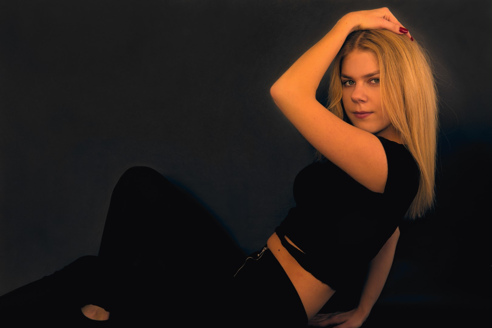

Fotografuję, rozwijam fascynację światem front-end developmentu (HTML, CSS, JS). Poza tym nie mogę żyć bez muzyki i prawdziwej kawy. Zawodowo jestem związany z innymi branżami, lecz powoli skłaniam się do przeskoku w stronę tworzenia stron internetowych, jak również klasycznego programowania. Lubię łączyć zarówno życie zawodowe jak i prywatne z procesem twórczym.
Pomagają mi w pracy:
-
HTML
-
CSS
-
Java Script
-
Visual Studio Code
-
Darktable
-
Inkscape
-
Gimp
-
Davinci Resolve
-
Microsoft Word
-
Microsoft Excel
-
Cubase
-
Native-Instruments
-
Waves Audio
Frontend ❘
-
Zatrzymaj czas
Marzeniem wielu z nas jest umiejętność zatrzymania czasu. Dzięki tej stronie i językowi Java Script możesz to zrobić! Wystarczy nacisnąć magiczny przycisk i... gotowe.
-
Skrolluj z uśmiechem
Komputery i świat IT wydaje sprawiają wrażenie bezdusznych maszyn? Ten przypadek jest dowodem na to, że wiele zależy od nas. Dobry nastrój nie zawsze pojawia się automatycznie, ale często jest wynikiem tego, co zrobimy.
-
Roksaq
Tutaj nie trzeba wielu słów. Kobieta piękną jest, a chwile uwiecznione na zdjęciach zostają z nami na zawsze. Portfolio fotomodelki, które warto zobaczyć.
-
Czarny kot
A w zasadzie koty, które przebiegają przez drogę, lecz nie przynoszą pecha, tylko wskakują na interaktywny przycisk, by się za nim schować. Wirtualny gadżet dla fanów naszych milusińskich. :)
-
Częstuj się kawą
Jeżeli jesteś miłośnikiem kawy, ten prosty, lecz funkcjonalny slider jest dla Ciebie. Uwaga - klikasz na własne ryzyko. Istnieje niebezpieczeństwo, że poczujesz nieodpartą chęć udania się do realnej kawiarni.
🙂 -
Pastelowe przyciski
Oldschoolowo - pastelowo. Jeszcze nie tak dawno strony internetowe kolorystyką bardziej przypominały barwy blokowisk chaotycznie pomalowanych. Miało to swój urok, choć nie wytrzymało próby czasu. Sentyment jednak zostaje.
Galeria ❘
-

-

- 
-